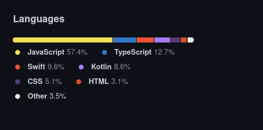
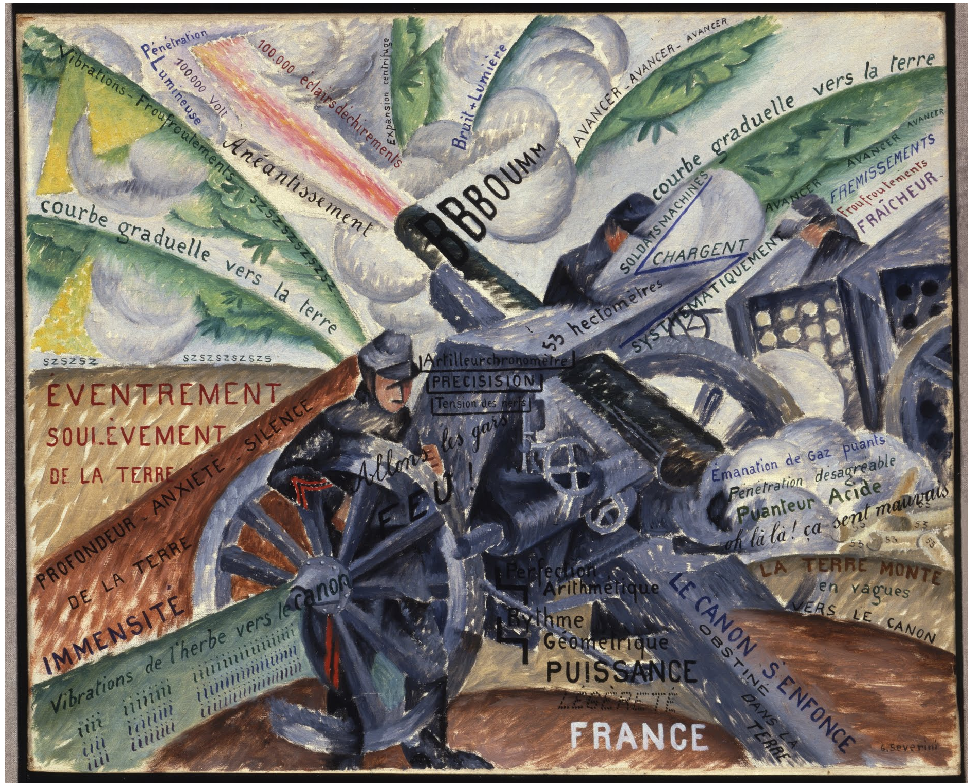
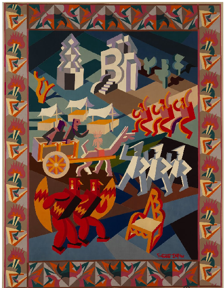

Professor UGR +
senior software engineer @ polypoly
A language to rule them all...

... not really
But
we came here to talk about postmodernism
Postmodernism is all around us
But is there a postmodern language?
Postmodernism is
An artistic/cultural movement
Anti-dualist
Claims that language models thought
Anti-dualism promotes pluralism and diversity
Like diversity in the previous
repository?
How does it do that?
Also, are you not going to say Raku is
the best language?
But postmodernism needs to be made
Starting with futurism
Let's talk about futurism

Embraces sculture, painting, motion pictures
Am I going to talk a lot about this?
Futurism deploys new languages
in arts

... that incorporate the environment
Let's look at current dev environments
Web, concurrency, distributed, containerized
Elm: born to web
import Browser
import Html exposing (Html, Attribute, div, input, text)
import Html.Attributes exposing (..)
import Html.Events exposing (onInput)
main = Browser.sandbox { init = init, update = update, view = view }
type alias Model = { que : String }
init : Model
init = { que = "" }
type Msg = Change String
update : Msg -> Model -> Model
update msg modelo =
case msg of
Change donde -> { modelo | que = donde }
view : Model -> Html Msg
view modelo = div []
[ input [ placeholder "Que", value modelo.que, onInput Change ] []
, div [] [ text (if modelo.que == "Rock" then "en Samil" else "de qué") ]
]
Voilà the program
Futurism sez: Language shapes thought
say (١,١,* + *...∞)[١..٣٣].trans( [0..9] => ['٠'..'٩'] )
import { serve } from "https://deno.land/std@0.144.0/http/server.ts";
import { h, renderSSR } from "https://deno.land/x/nano_jsx@v0.0.32/mod.ts";
function App(url) {
let pachanga;
const thisUrl = new URL( url.children[0] );
switch (thisUrl.pathname) {
case "/silbo" : pachanga="Rockabilly"; break;
case "/rock" : pachanga="En Samil"; break;
case "/vitrasa" : pachanga="Hacia Samil"; break;
default: pachanga="Diga qué le debo";
}
return ( Qué pasa por la calle
function time_mutations(number,length)
inicioTiempo = time()
fitness = @distributed for i in 0:1:number
indi = random_chromosome(length)
reduce( +, indi)
end
println(fitness)
time()-inicioTiempo
end
Abrirse al entorno
Si no se testea, no funciona
Tests unitarios forman parte del lenguaje
import test from 'node:test';
import assert from 'assert/strict';
import { rock, vamosABailar } from "../src/rock-en-samil.js";
const elRockDonde = "En Samil";
test("Rock", () => {
assert.equal( rock(), elRockDonde );
});
test("Vamos a bailar", () => {
assert.equal( vamosABailar("El Rock"), elRockDonde );
});
Los objetos se abren al entorno
console, IndexedDB
Los proyectos no se hacen en un solo lenguaje
Integración continua, contenedores, gestores de tareas.
Los lenguajes seguros se cierran
al entorno
deno run --allow-net rock-en-samil.ts
Stackoverflow es la
documentación de muchos lenguajes
Los lenguajes posmodernos son
multi-paradigma
Los lenguajes posmodernos se abren al entorno
Comunidad, documentación,
ecosistema son el lenguaje
Perl fue el primer lenguaje posmoderno
La cebolla es su símbolo
El lenguaje (intérprete,
sintaxis)...
... se abre al entorno
(comunidad, ecosistema)
De stackoverflow a Raku en dos días
La comunidad crea el
lenguaje
Los lenguajes posmodernos viven en un
entorno de producción posmoderno
Que tus programas no huelan a C
Ningún lenguaje es totalmente posmoderno
Pero existe el desarrollo posmoderno
Es imposible aprender desarrollo con un
solo lenguaje
Ni siquiera se puede aprender un lenguaje usando
un solo lenguaje
El desarrollo posmoderno deconstruye
Las aplicaciones tienen que ser examinadas, testeadas, compiladas, desplegadas...